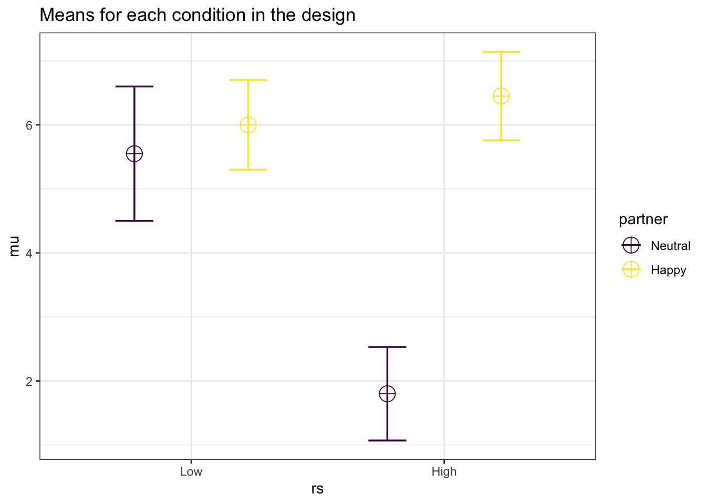
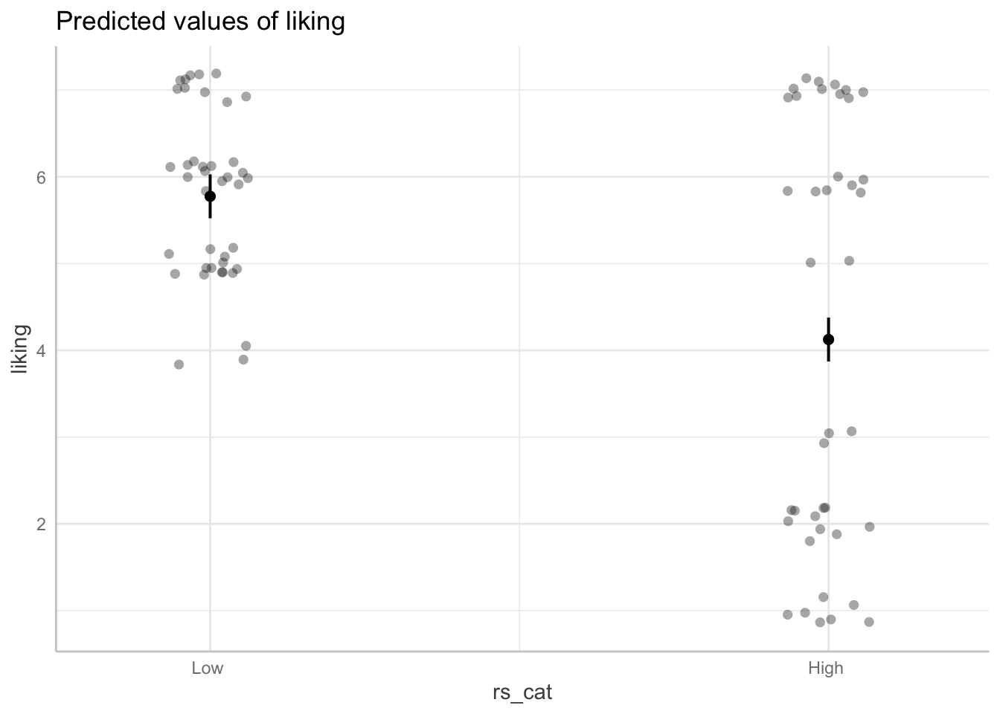
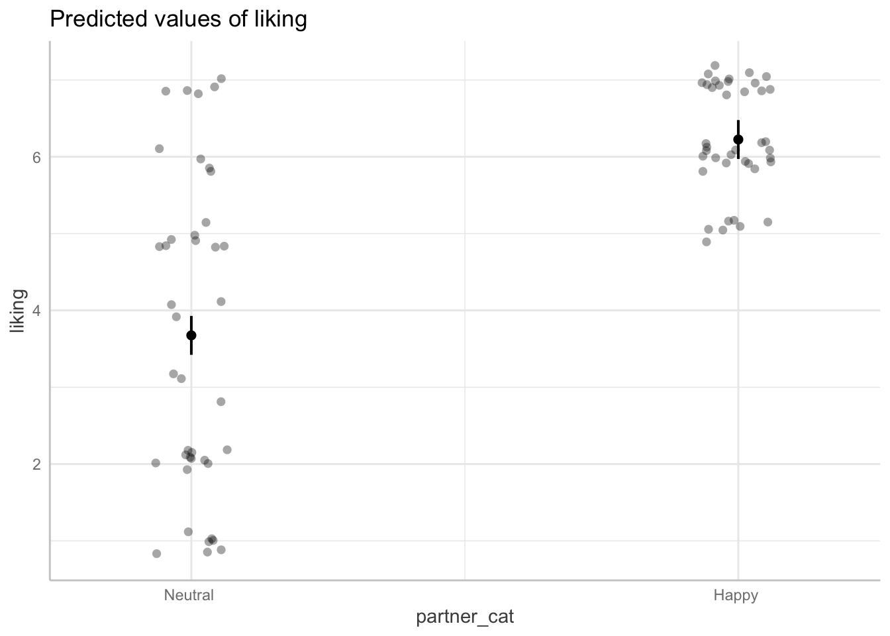
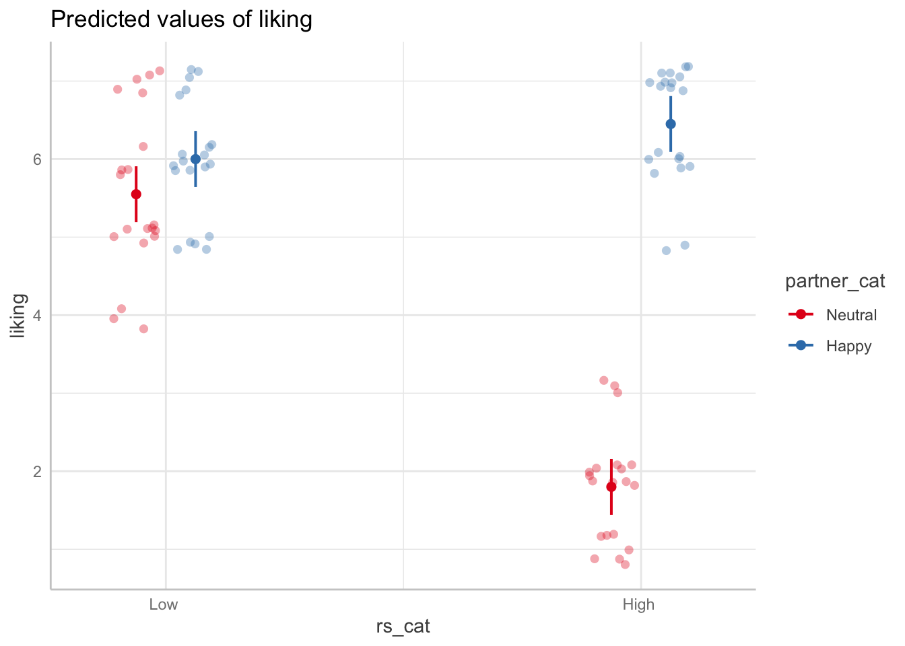
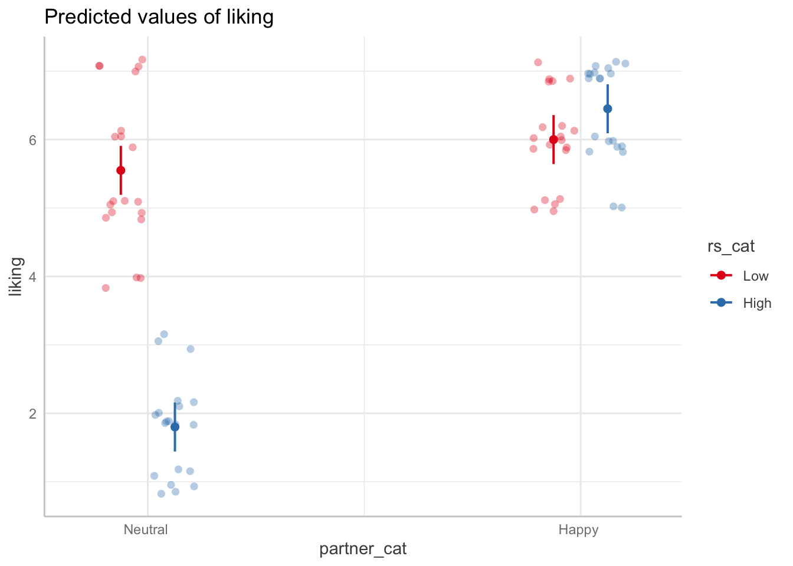

#load packages
library(tidyverse)
library(emmeans)
library(apaTables)
library(easystats)
library(broom)Lab 10: Factorial Designs
Princeton University
Research scenario
Based on subjects’ self-reports of rejection sensitivity (N = 80), a researcher divides subjects into two equal groups (low RS and high RS). Whereas half of the subjects in each group interact with a partner who displays a happy emotional expression during the interaction, the other half of the subjects in each group interact with a partner who displays a neutral emotional expression during the interaction. After the interaction, subjects are asked to rate the statement, “My interaction partner likes me”, on a scale from 1 (strongly disagree) to 7 (strongly agree).
Factor 1: Rejection Sensitivity
- Low
- High
Factor 2: Partner’s Emotional Expression
- Neutral
- Happy
Dependent Variable: Perceived Liking
Import & inspect the data
- Load the .csv file from the repository
reject <- read.csv("https://raw.githubusercontent.com/jgeller112/Lab10-Interactions-2/main/reject.csv")Make sure the categorical variables are factors
str(reject)'data.frame': 80 obs. of 4 variables:
$ X : int 1 2 3 4 5 6 7 8 9 10 ...
$ rs : chr "Low " "Low " "Low " "Low " ...
$ partner: chr "Neutral " "Neutral " "Neutral " "Neutral " ...
$ liking : int 4 4 4 5 5 5 5 5 5 5 ...reject_cat <- reject %>%
mutate(rs_cat=as.factor(rs), partner_cat=as.factor(partner))
str(reject_cat)'data.frame': 80 obs. of 6 variables:
$ X : int 1 2 3 4 5 6 7 8 9 10 ...
$ rs : chr "Low " "Low " "Low " "Low " ...
$ partner : chr "Neutral " "Neutral " "Neutral " "Neutral " ...
$ liking : int 4 4 4 5 5 5 5 5 5 5 ...
$ rs_cat : Factor w/ 2 levels "High ","Low ": 2 2 2 2 2 2 2 2 2 2 ...
$ partner_cat: Factor w/ 2 levels "Happy ","Neutral ": 2 2 2 2 2 2 2 2 2 2 ...- Notice that by default R orders factor levels alphabetically. In our case, this means that
Highwill be the reference group of rejection sensitivity andHappywill be the reference group of interaction partner’s emotional expression. However, it might be more intuitive to haveLowandNeutralbe the reference groups, respectively.
Reorder the levels
reject_cat <- reject_cat %>%
mutate(rs_cat = factor(rs, levels=c("Low ", "High ")),
partner_cat = factor(partner,levels= c("Neutral ", "Happy ")))Descriptive Statistics
- How many Ps are there per condition?
reject_cat %>%
group_by(rs_cat, partner_cat) %>%
summarise(n=n())# A tibble: 4 × 3
# Groups: rs_cat [2]
rs_cat partner_cat n
<fct> <fct> <int>
1 "Low " "Neutral " 20
2 "Low " "Happy " 20
3 "High " "Neutral " 20
4 "High " "Happy " 20Table of Means
- The results of a factorial ANOVA are often represented in a table of means, which contains the means of each combination of conditions (the cell means) and means for the levels of each variable ignoring the other variables (the marginal means)
Table of Means
- The apa.2way.table() function from the
apaTablespackage is a very convenient way to get our cell means and marginal means. This function works for any type of 2-way ANOVA, regardless of the number of levels of your factors, e.g. it would work for a 3 x 3 ANOVA. All you need to do is indicate what the IV’s (aka factors) and DV are and specifyshow.marginal.means = TRUE.
Use
apa.2way.table()to create a table for our data
apa.2way.table(iv1 = rs_cat,
iv2 = partner_cat,
dv = liking,
data = reject_cat,
show.marginal.means = TRUE)
Table 0
Descriptive Statistics For Liking In a 2(Rs_cat) X 2(Partner_cat) Design
partner_cat
Neutral Happy Marginal
rs_cat M SD M SD M SD
Low 5.55 1.05 6.00 0.73 5.78 0.92
High 1.80 0.70 6.45 0.69 4.12 2.45
Marginal 3.67 2.09 6.22 0.73
Note. M = mean. SD = standard deviation.
Marginal indicates the means and standard deviations pertaining to main effects. Question: Which means are being compared in the main effect of rejection sensitivity?
- 4.12 and 5.78
Question: Which means are being compared in the main effect of interaction partner?
- 6.22 and 3.67
Question:Which means are involved in the interaction?
- 6.45, 6.00, 1.80, 5.55
Conduct the Factorial ANOVA
Using Regression: lm()
Run a dummy coded regression analysis
## your code here
model <- lm(liking ~ rs_cat * partner_cat, data = reject_cat) %>%
tidy(conf.int = TRUE)
model# A tibble: 4 × 7
term estimate std.error statistic p.value conf.low conf.high
<chr> <dbl> <dbl> <dbl> <dbl> <dbl> <dbl>
1 "(Intercept)" 5.55 0.180 30.9 9.26e-45 5.19 5.91
2 "rs_catHigh " -3.75 0.254 -14.8 5.19e-24 -4.26 -3.24
3 "partner_catHappy " 0.450 0.254 1.77 8.07e- 2 -0.0562 0.956
4 "rs_catHigh :partner… 4.20 0.359 11.7 1.21e-18 3.48 4.92 Interpret each of the regression coefficients
- \(b_0\): The predicted Y value for the neutral, low group (M=5.55)
- \(b_1\): The simple effect for the low vs. high group when neutral, b = -3.75, SE = 0.25, 95% CI[-4.26, -3.24], t = -14.75, p < .001.
- \(b_2\): The simple effect for the neutral vs. happy group when low, b = 0.45, SE = 0.25, 95% CI[-4.26, -3.24], p > .05.
- \(b_3\): The interaction between the rs and partner group, b = 4.20, SE = 0.36, 95% CI[-4.26, -3.24], p < .001.
Recoding
Obviously, the means being compared by b1 and b2 do not represent our main effects. The main effect of RS would be a comparison of the marginal means for the low and high conditions. The main effect of partner would be a comparison of the marginal means for the neutral and happy conditions.
With the way we have rs and partner coded in the model, the regression coefficient estimates don’t correspond simply to the mean difference between conditions. We can recode the factors so that the parameter estimates, b1 and b2, correspond to a test of the main effects.
Question: How should we code the levels of rejection sensitivity and partner emotion so that the parameter estimates, b1 and b2, correspond to a test of their main effects?
- Devaition coding
Assign new codes to the levels of each factor
#change to dev coding
contrasts(reject_cat$rs_cat)<-c(0.5, -0.5)
contrasts(reject_cat$partner_cat)<-c(0.5, -0.5)Re-run the analysis with newly coded factors
model_dev <- lm(liking ~ rs_cat * partner_cat, data = reject_cat) %>%
tidy(conf.int = TRUE)
model_dev# A tibble: 4 × 7
term estimate std.error statistic p.value conf.low conf.high
<chr> <dbl> <dbl> <dbl> <dbl> <dbl> <dbl>
1 (Intercept) 4.95 0.0899 55.1 5.14e-63 4.77 5.13
2 rs_cat1 1.65 0.180 9.18 6.03e-14 1.29 2.01
3 partner_cat1 -2.55 0.180 -14.2 4.64e-23 -2.91 -2.19
4 rs_cat1:partner_cat1 4.20 0.359 11.7 1.21e-18 3.48 4.92Interpret the new model coefficients
- \(b_0\): The grand mean across all cell means
- \(b_1\): The main effect of rejection sensitivity, b = 1.65, SE = 0.18, 95% CI[-4.26, -3.24], t = 9.18, p < .001.
- \(b_2\): The main effect of partner , b = -2.55, SE = 0.18, 95% CI[-4.26, -3.24], t = 14.19, p < .001.
- \(b_3\): The interaction between the rs and partner group, b = 4.20, SE = 0.36, 95% CI[-4.26, -3.24], p < .001.
Using Traditional ANOVA: afex
- You can also perform a traditional ANOVA and get straightforward results by passing the model to the
aov_ezfunction.
Run an ANOVA
library(afex)
reject <- read.csv("https://raw.githubusercontent.com/jgeller112/Lab10-Interactions-2/main/reject.csv")
aov_ez(id="X", between=c("rs", "partner"), dv="liking", data=reject, anova_table = list(es = "pes"))Anova Table (Type 3 tests)
Response: liking
Effect df MSE F pes p.value
1 rs 1, 76 0.65 84.28 *** .526 <.001
2 partner 1, 76 0.65 201.30 *** .726 <.001
3 rs:partner 1, 76 0.65 136.52 *** .642 <.001
---
Signif. codes: 0 '***' 0.001 '**' 0.01 '*' 0.05 '+' 0.1 ' ' 1## your code hereQuestion: What type of sums of squares does
aov_ezuse?
- Type 3
Effect sizes
What are the effect sizes for each main effect and interaction. For each effect, is it small, medium, or large?
## your code here
model_es <- lm(liking ~ rs_cat * partner_cat, data = reject_cat) %>%
effectsize::eta_squared(partial=TRUE)
model_es# Effect Size for ANOVA (Type I)
Parameter | Eta2 (partial) | 95% CI
--------------------------------------------------
rs_cat | 0.53 | [0.40, 1.00]
partner_cat | 0.73 | [0.64, 1.00]
rs_cat:partner_cat | 0.64 | [0.54, 1.00]
- One-sided CIs: upper bound fixed at [1.00].- All of them are large (huge!)
Power
Using
Superpowerdetermine the minimum/smallest effect size we could reliably detect given our sample size and design with 90% power
library(Superpower)
string <- "2b*2b"
n <- 20
mu <- c(5.55, 6.00 ,1.80, 6.45)
sd <- c(1.05, 0.70, .73, .69)
labelnames <- c("rs", "Low", "High", "partner", "Neutral", "Happy") #
design_result <- Superpower::ANOVA_design(design = string,
n = n,
mu = mu,
sd = sd,
labelnames = labelnames,
plot = TRUE)
Superpower::ANOVA_power(design_result,
alpha_level = 0.05,
nsims = 1000,
verbose = FALSE)Power and Effect sizes for ANOVA tests
power effect_size
anova_rs 100 0.5274
anova_partner 100 0.7275
anova_rs:partner 100 0.6439
Power and Effect sizes for pairwise comparisons (t-tests)
power effect_size
p_rs_Low_partner_Neutral_rs_Low_partner_Happy 35.3 0.5217
p_rs_Low_partner_Neutral_rs_High_partner_Neutral 100.0 -4.2766
p_rs_Low_partner_Neutral_rs_High_partner_Happy 89.2 1.0492
p_rs_Low_partner_Happy_rs_High_partner_Neutral 100.0 -6.0451
p_rs_Low_partner_Happy_rs_High_partner_Happy 52.2 0.6677
p_rs_High_partner_Neutral_rs_High_partner_Happy 100.0 6.7441Visualization
- Use
ggplot2to create nice figures of the main effects and interaction
Main effects
Plotting the main effect of rejection sensitivity
## your code here
library(ggeffects)
model_dev <- lm(liking ~ rs_cat * partner_cat, data = reject_cat)
ggemmeans(model_dev, terms=c("rs_cat")) %>% plot(add.data=TRUE, jitter=.2)
Plotting the main effect of partner’s emotional expression
## your code here
ggemmeans(model_dev, terms=c("partner_cat")) %>% plot(add.data=TRUE, jitter=.2)
Interaction
Plotting the interaction effect
## your code here
ggemmeans(model_dev, terms=c("rs_cat", "partner_cat")) %>% plot(add.data=TRUE, jitter=.2)
Switch how the interaction is visualized by switching the order of terms
## your code here
ggemmeans(model_dev, terms=c("partner_cat", "rs_cat")) %>% plot(show_data=TRUE, jitter=.2)
Question: How would you describe in a paper what the significant interaction effect means?
Simple effects
- Simple effects are the effect of some factor (e.g., interaction partner’s expression) at each level of another factor (e.g., at high and low RS separately).
Question: Does partner emotion have an effect on perceived liking for people low on rejection sensitivity? For people high on rejection sensitivty?
emmeans::emmeans(model_dev, pairwise~rs_cat*partner_cat) %>%
joint_tests(by="rs_cat") rs_cat = Low :
model term df1 df2 F.ratio p.value
partner_cat 1 76 3.134 0.0807
rs_cat = High :
model term df1 df2 F.ratio p.value
partner_cat 1 76 334.686 <.0001Question: Does rejection sensitivity have an effect on perceived liking when partner shows neutral emotions? When partner shows happy emotions?
## your code here
emmeans::emmeans(model_dev, pairwise~rs_cat*partner_cat) %>%
joint_tests(by="partner_cat") partner_cat = Neutral :
model term df1 df2 F.ratio p.value
rs_cat 1 76 217.668 <.0001
partner_cat = Happy :
model term df1 df2 F.ratio p.value
rs_cat 1 76 3.134 0.0807Reporting results
Write-up the results from the ANOVA analysis in APA style. Focus on one of the simple effect directions from above (they are equivalent so pick one that makes the most sense)
aov_model <- aov(model_dev)
report(aov_model)The ANOVA (formula: liking ~ rs_cat * partner_cat) suggests that:
- The main effect of rs_cat is statistically significant and large (F(1, 76) =
84.28, p < .001; Eta2 (partial) = 0.53, 95% CI [0.40, 1.00])
- The main effect of partner_cat is statistically significant and large (F(1,
76) = 201.30, p < .001; Eta2 (partial) = 0.73, 95% CI [0.64, 1.00])
- The interaction between rs_cat and partner_cat is statistically significant
and large (F(1, 76) = 136.52, p < .001; Eta2 (partial) = 0.64, 95% CI [0.54,
1.00])
Effect sizes were labelled following Field's (2013) recommendations.